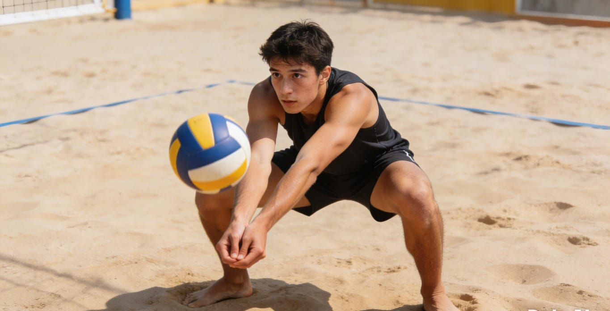
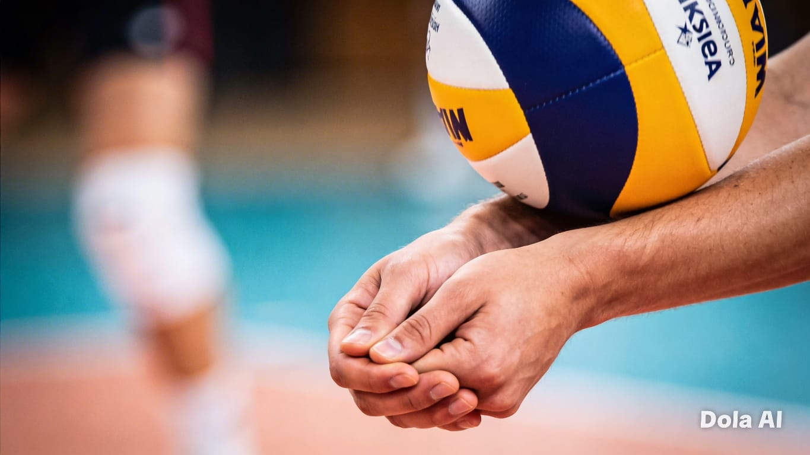
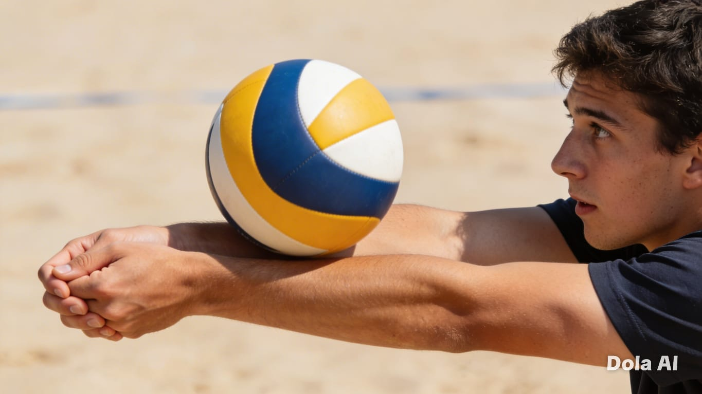
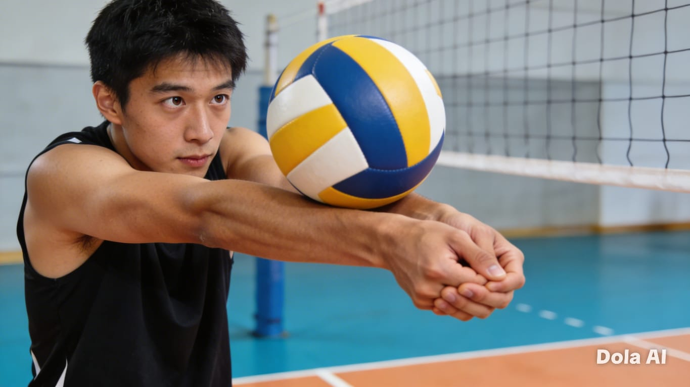

Pricipios de la Técnica del Golpe de Antebrazos

Posición Inicial
Posición inicial: postura baja con rodillas semiflexionadas, centro de gravedad bajo, peso en las puntas de los pies.

Plataforma de Contacto
Plataforma de contacto: brazos alineados y superficie firme, manos juntas creando un plano rígido.

Golpeo
Golpeo: extensión controlada del cuerpo y los brazos al contactar el balón, transmitiendo fuerza de abajo hacia arriba.

Seguimiento
Seguimiento: dirección del balón hacia el objetivo, finalizando la acción con el cuerpo equilibrado.
"No creo que nadie tenga un límite. Todos podemos mejorar constantemente."— -Chip Kelly
Artículos y Consejos
Mejora tu táctica y técnica entrenando.
Ejercicios Prácticos
Rutinas por nivel para dominar el golpeo con antebrazos.
Por qué se rompe la plataforma al recibir
Un error común es flexionar los codos justo antes del contacto. Descubre cómo mantener la tensión adecuada para un pase limpio
> VER MASConsejos prácticos para absorber saques
Aprende a utilizar el peso de tu cuerpo hacia atrás y relajar ligeramente los hombros para amortiguar el impacto de un saque
> VER MASLeer el saque vs reaccionar tarde
El trabajo de pies antes de formar la plataforma es vital. Analizamos cómo el desplazamiento lateral rápido mejora la calidad
> VER MASAntes del golpeo: Desplazamientos previos al golpeo
El jugador tiene que aprender a visualizar el vuelo del balón y prever la caída del mismo, desplazarse al lugar correcto y ajustar su posición antes del contacto.
> VER MASAntes del golpeo: Posición previa al contacto
debe ser baja para conseguir estabilidad en el golpeo y un mayor tiempo de ajuste en el contacto con el balón. Realizando una semiflexión de las rodillas, los pies se posicionan separados y con las puntas hacia delante de forma que uno de ellos esté ligeramente más adelantado con respecto al otro.
> VER MASDurante el golpeo:
Los hombros se fijan y amortiguan el pase mediante un acompañamiento del balón, que devuelven en contramovimiento direccionados hacia el objetivo.
> VER MASDespués del contacto:
Se acompaña ligeramente el balón con un movimiento hacia delante mientras continuamos la extensión de piernas. En algunos jugadores suelen incluso realizar algún paso tras el contacto con el balón.
> VER MASPase continuo contra la pared
Ideal para automatizar la postura y el contacto firme de la plataforma rígida.
> VER MASDesplazamiento lateral y recepción
Enfocado en llegar con los pies y posicionarse antes de unir los brazos.
> VER MASRecepción en triángulo (trío)
Trabajo dinámico de comunicación y ajuste de pases desde diferentes ángulos.
> VER MAS